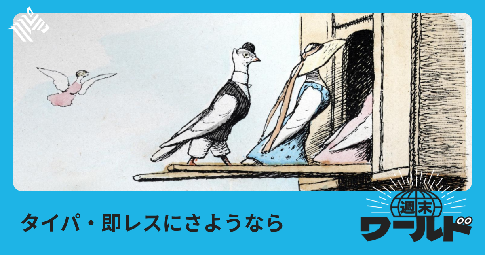
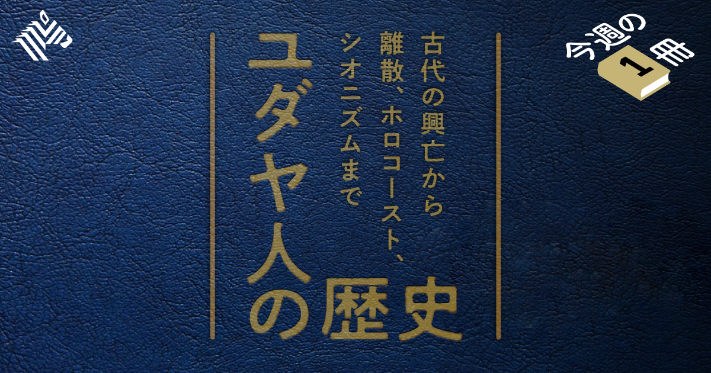
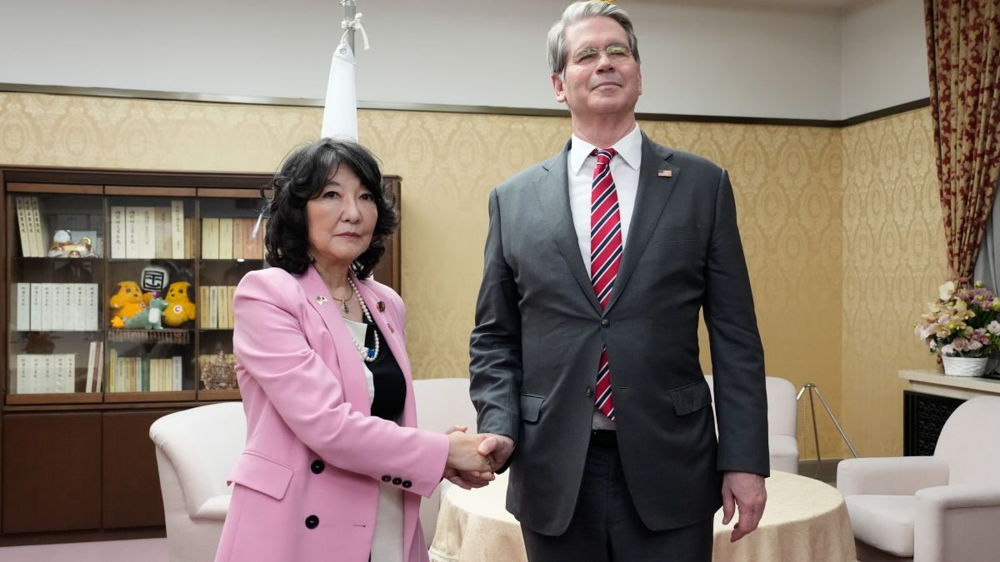
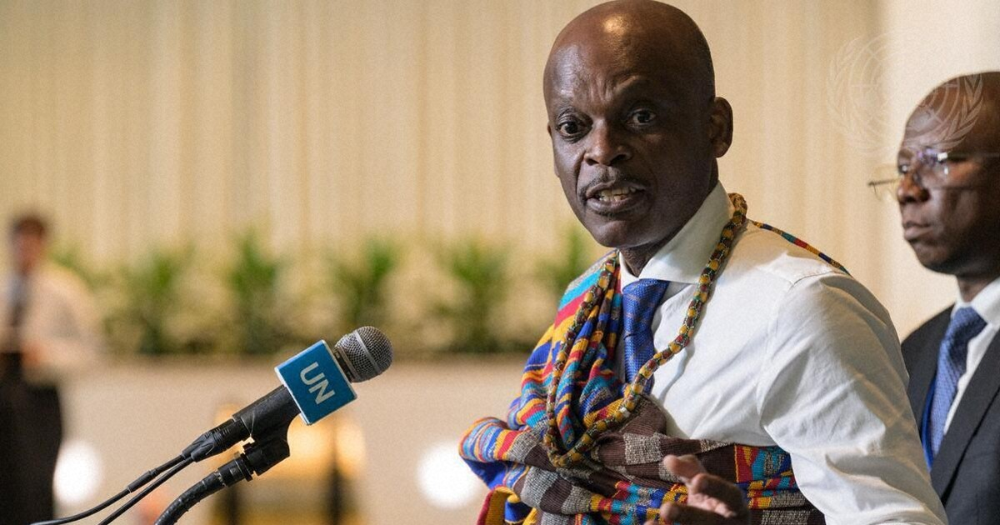

01
【スロー】「すぐ返信が来ない」アプリにハマる若者たち
発行日時：2026年9月5日 05:30 JST ・ The New York Times（NewsPicks掲載）

あなたに関係ありそうな理由
速さを価値にしてきたデジタル製品で、あえて待たせる設計が何を生み、どこまで有効なのかを考える材料になるためです。
概要
この記事は、メッセージがすぐに届かないこと自体を魅力にしたアプリ「Carrier Pidge」を追う。送信した文章は伝書鳩が運ぶように移動し、相手に着くまで1日以上かかる場合もある。届かない確率は0.2％で、失われた手紙は0.99ドルで再送できるという。創業者は、通知や既読、即時返信に疲れた人に、あえて人工的な「摩擦」を渡したいと考えた。ニューヨーク・タイムズの記事によれば、利用者は立ち上げ直後の約200人から約7万5000人へ増え、同じチームの動画日記アプリ「Roost」も約65万ダウンロードになった。速い連絡手段を捨てるというより、近しい相手へ何を書くかを選び直すための別レーンとして使われている。返信が遅いからこそ、届く前に気持ちが変わることも、待つ時間が会話の余白になることもある。記事は、若い利用者の間にあるスマートフォン疲れの文脈も置く。技術に依存していると感じる人や、技術が人とのつながりを壊すと答える人が少なくないという調査を引き、便利さが常に親密さを増やすわけではないと示す。ただし、遅い仕組みが誰にでも合うわけではない。急ぎの連絡や仕事の調整には不向きで、待つことそのものが関係を改善する保証もない。表示コメントでは、摩擦があるから人間らしいという単純な礼賛ではなく、相手に向ける注意や意図を取り戻せるかが大事だという受け止めが目立った。プロダクトを考える際には、利用時間や送信数の最大化だけでなく、急かされない状態で利用者が何を選び直せるかも一つの設計指標になる。速さを減らすことは不便を足すことではなく、関係の質をどう扱うかという問いでもある。一方で、返事が遅いことで不安や誤解が増える関係もある。選択肢の設計は、遅延を押し付けることではなく、用途や相手に応じて速度を変えられる状態にあるべきだろう。重要なのは、通知を減らすこと自体ではなく、送る前、待つ間、受け取った後の行動にどんな変化が起きるのかを観察し、意図と違う負担が生まれていないかを確かめ続けることだ。加えて、利用者の手元に残る選択肢や、関係の種類ごとの利用実態を測らなければ、心地よい遅さという設計は簡単に自己満足になる。
仕事や会話で使える一言
「早く返すための機能だけでなく、相手に向ける注意を取り戻せる余白も設計できるかを考えたいです。」
NewsPicks原文を読む
02
【日本人っぽい】けど世界的偉人が続出する「ユダヤの謎」
発行日時：2026年9月5日 05:30 JST ・ NewsPicks編集部

あなたに関係ありそうな理由
文化や教育の特徴を語る時に、集団を一括りにせず、問い返す習慣や学びの仕組みをどう見るかを考えられるためです。
概要
この記事は、世界人口の約0.2％とされるユダヤ人から、科学、思想、映画などで広く知られる人物が多く出ていることを入口に、何が背景にあるのかを問う。アインシュタイン、フロイト、マルクス、スピルバーグなどの名前を挙げ、ノーベル賞受賞者に占める比率が高いという紹介も置く。ただし、記事の主眼は生まれつきの能力や民族の優劣を説明することではない。大学教授への取材を通して、民族、宗教、歴史、家族、教育という複数の要素が重なり、単純な因果で語れないことをたどる。中心にあるのは、律法をめぐる解釈と議論を長く積み重ねてきた知的な伝統だ。聖書の文言を暗記して終えるのではなく、タルムードなどの議論を参照しながら「なぜそう言えるのか」「別の見方はないか」を問い返す。答えを受け取るだけでなく、問いを続けることが学びの一部になっている。家族の食卓や共同体も、その対話を支える場として描かれる。一方、記事タイトルが示す「日本人っぽい」という比喩は、似ているように見える勤勉さや集団性だけで結論づける危うさもはらむ。表示コメントでは、日本社会が同調を優先しやすい場面と、ユダヤ教の解釈の多様性を同じものとして扱えないという指摘があった。異なる宗教・移住・迫害の歴史を消してはならないという留保も重要だ。組織の学びに引き寄せるなら、特定の文化を模倣することではなく、肩書きや既存の正解を前にしても根拠を尋ね、反論を受け止め、問いを次に渡せる場をつくれるかが焦点になる。多様な答えを許すことと、事実を軽く扱うことは別である。その緊張を保ちながら議論する習慣が、長い時間で知識を更新する力になる。また、長い歴史のなかで形成された制度や経験を、成果が出たという結果だけから切り出すことも避けたい。移住先ごとの社会条件、差別や排除の経験、個人差を無視すれば、説明はすぐにステレオタイプになる。誰がどんな前提で発言し、どの解釈が見えにくくなっているのかまで確かめる読み方が必要だ。そのため、組織内でも単に質問を歓迎すると掲げるだけでなく、少数意見が不利益を受けず、検証可能な形で残る手順を整えたい。説明に誰が含まれないかを示す責任もある。
仕事や会話で使える一言
「正解を早く出すより、根拠を問い直し、異なる解釈を残せる場をつくりたいです。」
NewsPicks原文を読む
03
「次のベネズエラ」になりたくないカナダ
発行日時：2026年9月5日 05:20 JST ・ The Wall Street Journal（NewsPicks掲載）
あなたに関係ありそうな理由
貿易や安全保障のニュースを、関税率だけでなく、依存の度合いと主権をどう守るかという問題として読み直せるためです。
概要
この記事は、米国との緊密な経済関係を持つカナダが、目の前の関税交渉だけでなく、自国の選択権をどう保つかを強く意識するようになった背景を描く。見出しの「次のベネズエラ」は、米国がベネズエラで影響力を強める姿を引き合いに出した表現であり、カナダが同じ状況にあるという意味ではない。むしろ記事は、かつて国境をまたぐ供給網や安全保障の連携を当然の前提とした隣国関係に、従属への警戒が混ざり始めたことを伝える。米国市場への輸出、エネルギー、投資、国境を越える部品調達はカナダ経済の重要な基盤だ。だから距離を取ることにも大きな費用がある。一方で、米政権が関税や投資規制を交渉の圧力として使い、ベネズエラをめぐる発言も強めるなかで、依存がそのまま交渉上の弱点になり得るという感覚が広がった。記事に登場するカナダ側の視点は、米国を敵とみなすものではなく、近い同盟国だからこそ一方的な条件変更に耐えられる制度や取引先を増やす必要があるというものだ。資源、物流、防衛、デジタル基盤をどの国・企業にどれだけ委ねているかを、平時から見える形にすることが出発点になる。表示コメントでは、「ただで支配できる」という発想は現実には資本、制度運営、反発のコストを伴うという指摘や、カナダが危機感を持つ理由を軽く見ない方がよいという声があった。反面、相互依存をすべて危険視すれば、調達・投資・技術協力から得る便益も失われる。重要なのは依存をゼロにすることではなく、代替できない領域、交渉で止まると困る領域、複数化できる領域を分けることだ。国の話に見えるが、特定の顧客、仕入先、プラットフォームへ集中する企業にも通じる。強い相手と関係を続けながら、選べる余地を残せるかが問われている。契約の更新時だけに慌てるのでなく、供給、データ、決済、運用のどこに単一障害点があるかを棚卸しし、切替の時間と費用まで把握する。相手を疑うためではなく、対等な協力を続けるための準備として扱うことが肝心だ。その上で、代替先との関係を実際に維持できるか、緊急時に意思決定が誰で止まるかまで試す必要がある。地図だけでは安心できない。依存度は定期的に見直したい。
仕事や会話で使える一言
「依存をなくすのではなく、止まった時に何が代替できないのかを先に可視化したいです。」
NewsPicks原文を読む
04
いよいよ｢日本売り｣が始まった､これから｢シン･トリプル安｣が同時に起きるのかを注視しなければならない
発行日時：2026年9月5日 06:30 JST ・ 東洋経済オンライン（NewsPicks掲載）

あなたに関係ありそうな理由
強い市場見通しを読む時に、印象的な言葉と観測できる指標、仮説が外れる条件を分けて考える練習になるためです。
概要
この記事は、筆者が日本の長期金利上昇、株価の動き、財政運営への懸念を結び付け、「日本売り」が始まりつつあると論じるものだ。問題提起の中心は、国債、株式、通貨が同時に売られる従来の「トリプル安」だけではない。筆者は米国についても、ドル、米国債、米国株に加え、金やビットコインまで下落する「シン・トリプル安」が重なれば危機が決定的になるという見立てを示す。日本では、概算要求や米財務長官と日本の財政・金融当局者の会談が報じられた後、長期金利が3％を超えたという報道を材料にする。記事は、利上げ観測で為替が円高方向に動いたため典型的な円安を伴うトリプル安ではなかった一方、夜間取引を含む株価急落に警戒の兆しを読む。ここで大切なのは、記事が確定した事実を報告するだけではなく、筆者自身の強い市場観を提示していることだ。読者は「始まった」という言葉を予測と区別し、どの価格、金利、政策変更がその仮説を支えるのかを確認する必要がある。表示コメントでは、同媒体が金融危機を強く訴える論調を継続してきたという指摘、ビットコインの値動きを日本の財政・金融政策の材料にどこまで使えるかという疑問が出た。また、為替が円高なら「円も売られるトリプル安」とは違うのではないか、危機を語るなら仮説が外れたと判断する条件も示すべきだ、という反論もある。これは記事を退けるための材料ではなく、リスクを扱う読み方の補助線になる。見出しの強さに反応して売買や経営判断を急ぐのではなく、主張、根拠、反証条件、他の説明を並べる。市場の不安を読む時ほど、その四つを分ける姿勢が必要だ。特に価格の一日分の動きは、政策、海外要因、需給、ポジション調整など複数の理由で生じる。ひとつの説明がもっともらしく見えても、時系列、比較対象、反対方向の指標を照らす。予測に反応する前に、観測事実と解釈の境目を戻すことが、リスク管理の第一歩になる。特定の指標だけを切り取らず、同じ現象を説明し得る仮説を並べた上で、判断に使う時間軸と意思決定の限界を明確にする。読む人自身の保有資産や事業環境への影響も、一般論と分けて検討したい。危機の言葉をそのまま取引しない。
仕事や会話で使える一言
「強い予測ほど、根拠と反証条件をセットで置いてから判断したいです。」
NewsPicks原文を読む
05
メルカトル図法でない「正しい世界地図を使って」 国連総会決議
発行日時：2026年9月5日 08:11 JST ・ 毎日新聞（NewsPicks掲載）

あなたに関係ありそうな理由
資料や図表の「見せ方」が、私たちの世界観や投資・教育の判断にどう影響するかを見直せるためです。
概要
この記事は、国連総会がアフリカ大陸などの面積を実際の比率に近く表す「イコールアース図法」の普及を奨励する決議を採択したと伝える。日本を含む164カ国が賛成し、米国のみが反対、6カ国が棄権した。背景には、学校や報道で広く使われるメルカトル図法が、高緯度の地域を大きく、赤道に近い地域を相対的に小さく描くという性質がある。記事は、地図上ではアフリカとグリーンランドがほぼ同じ大きさに見えるのに、実際のアフリカは約14倍であると説明する。アフリカ諸国は、こうした見え方が教育や政策での過小評価につながり得るとして、面積比を反映する図法の採用を求めてきた。決議を主導したトーゴの外相は、人々の世界認識を修正し、アフリカの経済的な潜在力への理解にもつながると述べた。一方、ここで「正しい地図」という言葉をそのまま受け取ると、別の単純化になる。球体を平面へ写す以上、面積、形、距離、角度をすべて同時に正確に保つことはできない。表示コメントで地理の専門家は、イコールアース図法は面積比を優先する正積図法であり、メルカトル図法は航路の方位を扱うことに強みがあると説明した。だから、前者が後者を全面的に置き換えるというより、目的に応じて使い分ける視点を広げることが決議の価値だと読める。別のコメントでは、面積の見え方と政治・経済的な評価を直接結び付ける因果は丁寧に検討すべきだという留保も示された。資料を作る側は、地図、ランキング、グラフを中立な容器と見なさず、何を正確に伝え、何を歪ませる表示かを明記したい。受け取る側も、数値そのものだけでなく、比較の物差しと視野の外に置かれたものを確認する。世界地図の議論は、情報をどう見るかという日常のリテラシーにもつながっている。例えば、色の濃淡、地図の中心、分類の単位も判断を左右する。作成者が意図を開示し、受け手が別の表示も見比べられることが、見た目の印象だけで結論を急がないための条件になる。それは地図に限らず、売上の構成比や顧客ランキングのような日常の可視化にも当てはまる。表現を変えた時に結論が変わるなら、その理由を説明できる状態にしておく必要がある。これは小さな実務でも同じだ。
仕事や会話で使える一言
「資料は何を正確に見せ、何を歪ませるのかまで説明して使いたいです。」
NewsPicks原文を読む